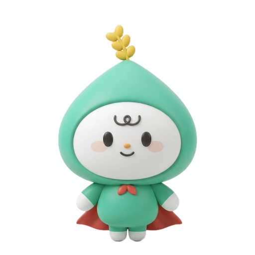

본 계획은 기후변화 대응 품종 개발을 위한 연차별 추진 전략을 담고 있다. 1차년도에는 유전자원 수집 및 특성 평가를 수행하고, 2차년도에는 선발 계통의 지역 적응성 검정을 실시한다.
세부 추진 내용은 다음과 같다. 첫째, 내재해성 유전자원 200점을 확보한다. 둘째, 표현형 평가 체계를 구축한다. 셋째, 선발 계통의 농가 실증을 추진한다.
사이렌이 울리는 동안에도 이 문서는 그대로 편집할 수 있어요. 색 레이어는 클릭이 통과하거든요.
